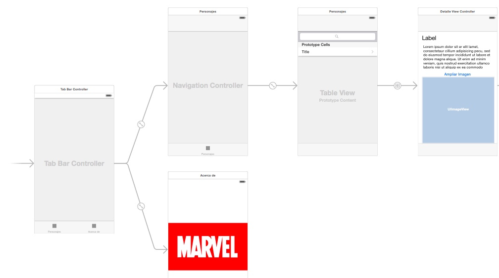

"Miniproyecto": app Marvel¶
Este "miniproyecto" trata de hacer una pequeña aplicación basándose en el API de la editorial Marvel, que nos permite consultar información sobre los personajes, los comics, las series,...
Pasos iniciales¶
Registro en la API de Marvel (Opcional)¶
Para poder usar la API de Marvel hacen falta claves de desarrollador. La plantilla de proyecto disponible en la web ya tiene unas claves incorporadas, que puedes usar, con lo que en principio no es necesario que te registres.
Con esas claves se pueden hacer 3000 peticiones diarias al API, seguramente suficientes para su uso en clase, no somos tanta gente. No obstante, también puedes registrarte desde el portal de desarrolladores de Marvel para poder obtener claves propias.
Acceso a la API¶
La API de Marvel es REST, por lo que acepta peticiones HTTP y devuelve los datos en JSON. No obstante hacerlas directamente con los APIs de iOS sería un poco engorroso, por lo que vamos a usar un par de librerías que nos faciliten no solo hacer la petición en sí sino sobre todo parsear el JSON. Usaremos una librería adicional llamada Marvelous, que encapsula las llamadas al API en una serie de clases de modo que no tenemos que hacer peticiones HTTP directamente.
Marvelous se distribuye como un "paquete" de la herramienta CocoaPods, que es un repositorio/sistema de gestión de paquetes que surgió antes del que ahora es oficial en Swift, el Swift Package Manager. Al tardar tanto en aparecer una herramienta oficial, otras de terceros llenaron este vacío como Cocoapods o Carthage.
Para acelerar el trabajo en el aula tenéis disponible en moodle la plantilla de workspace ya creada con CocoaPods. Si quieres ver cómo se ha hecho o crear tus proyectos con otras librerías de CocoaPods puedes consultar el Apéndice.
Uso de la plantilla de proyecto¶
En la plantilla de workspace descargada abre el fichero Marvel.xcworkspace, que es un workspace de Xcode (un conjunto de proyectos), no el proyecto Marvel directamente (NO ABRAS DIRECTAMENTE el Marvel.xcodeproj). Si lo has abierto correctamente, deberías ver dos proyectos, uno llamado Marvel, y otro llamado Pods. El proyecto principal es el primero, el segundo son librerías auxiliares.
Primero hay que hacer un Product > Clean Build Folder, y Product > Build para asegurarse de que las dependencias están compiladas y accesibles en nuestro código. Una vez hecho esto podemos ejecutar la app, en la consola aparecerá una lista de personajes cuyo nombre empieza por "Spider". Puedes mirar el código del View Controller para ver cómo se ha hecho.
Una vez hecho el build, puedes comprobar si la conexión con el API funciona bien ejecutando la aplicación, no verás nada en la pantalla del simulador pero en la consola de Xcode debería aparecer una lista de personajes que comienzan por "spider". Puedes examinar el código del view controller para ver cómo se ha hecho, usamos una librería auxiliar llamada Marvelous que implementa el acceso al API de forma sencilla.
Estructura que debe tener la aplicaci√≥n¶
Para que te hagas una idea de la estructura, se muestra el storyboard de la aplicación ya terminada

En la aplicación se podrá buscar, listar y mostrar los detalles de alguno de los recursos que ofrece el API. Elige tú lo que prefieras: personajes, comics, creadores...
Puedes comenzar embebiendo la pantalla inicial que aparece en el storyboard en un tab bar: selecciónala y en el menú Editor elige Embed In > Tab Bar Controller.
Vista de lista (2 puntos)¶
Esta debe ser una pantalla con una barra de búsqueda y una vista de tabla en la que se puede buscar y listar el recurso elegido (por ejemplo personajes). El resultado final será algo como:

Ve a la primera (y por el momento única) pantalla de contenido del tab bar, selecciona la barra inferior y en las propiedades bar item ponle un título apropiado (por ejemplo "Personajes") y un icono relevante.
Si no te gusta ninguno de los SF Symbols que tiens disponibles en iOS, hay unas cuantas webs de donde puedes coger iconos "planos", por ejemplo https://www.iconfinder.com/iconsets/ios-7-icons o https://www.flaticon.com/uicons/interface-icons
Crear la interfaz¶
La tabla:
- Arrastra una table view a la pantalla de "personajes" (o "comics", o lo que hayas elegido)
- Selecciona la tabla y en las propiedades crea un prototipo de celda incrementando el
Prototype cellsa 1. - Selecciona el prototipo de celda recién creado (el
table view cell) y en las propiedades elige comostyleel valorBasic, para poder usar uno de los tipos predefinidos de celda y no tener que hacerlo tú. - Ya que estás, ponle un
identifiera la celda prototipo. Recuerda que era un identificador elegido por tí que luego tienes que usar en Swift para recuperar una celda "reciclada".
La barra de búsqueda no se inserta como componente visual sino por código, así que la dejamos de momento (cuidado, hay un search bar en la biblioteca de componentes pero es para versiones de iOS anteriores a la 13).
Nos falta fijar el autolayout. Queremos que la tabla ocupe toda el área de la pantalla. Para ello lo más sencillo es ponerle 4 restricciones de distancia 0 a los bordes.
Crear el controller¶
Vamos a crear un view controller para esta primera pantalla
- Crea una nueva clase de Cocoa Touch llamada
ListaControllery haz que sea una subclase deUIViewController - Asígnale ese controller en el storyboard a la pantalla con la tabla. Recuerda que esto se hace a través del
identity inspector.
Como decíamos, la barra de búsqueda se crea por código Swift. En iOS, desde la versión 13 esto se controla con la clase UISearchController. Este utiliza el patrón delegación para gestionar los eventos de escribir en la barra, pulsar "buscar" en el teclado, etc. El objeto que actúe como delegate del UISearchController debe implementar el protocolo UISearchResultsUpdating
Siguiendo la filosof√≠a MVC (Monster View Controller üòÖ) para simplificar haremos que la barra de búsqueda est√© en el view controller de la pantalla actual, y √©ste sea el delegate.
Crea en ListaController un outlet para la tabla, lo usaremos en un momento (aquí supondremos que lo llamas "tabla").
Declara un UISearchController en el ListaController , inicialízalo y establece sus propiedades en el viewDidLoad (al añadir el código Xcode se “quejará”" de que el controller no es conforme a UISearchResultsUpdating, lo arreglaremos a continuación).
//esto debería ser una propiedad de ListaController
var searchController : UISearchController!
override func viewDidLoad() {
super.viewDidLoad()
//..aquí podría haber más código
self.searchController = UISearchController(searchResultsController: nil)
//el delegate somos nosotros (ListaController)
self.searchController.searchResultsUpdater = self
//Configuramos el search controller
//esto sería true si quisiéramos mostrar los resultados de búsqueda en un sitio distinto a la tabla
self.searchController.obscuresBackgroundDuringPresentation = false
//lo que aparece en la barra de búsqueda antes de teclear nada
self.searchController.searchBar.placeholder = "Buscar texto"
//Añadimos la barra de búsqueda a la tabla
self.searchController.searchBar.sizeToFit()
self.tabla.tableHeaderView = searchController.searchBar
}
Añade UISearchResultsUpdating a la cabecera del controller para que sea el delegate de la barra de búsqueda:
class ListaController: UIViewController, UISearchResultsUpdating {
...
}
Xcode
Al añadir el UISearchResultsUpdating Xcode se "quejará"" de que falta implementar el método updateSearchResults. Puedes darle al "fix" del mensaje de error o copiar el código que viene a continuación.
En el ListaController implementa el método updateSearchResults, que se llamará cuando se escriba algo en la barra. Con cada pulsación de tecla se llamará una vez al método. Para probar que funciona, de momento basta que imprimas en la consola el texto escrito en la barra.
func updateSearchResults(for searchController: UISearchController) {
let textoBuscado = searchController.searchBar.text!
//recortamos caracteres en blanco
let textoBuscadoTrim = textoBuscado.trimmingCharacters(in: .whitespacesAndNewlines)
print(textoBuscadoTrim)
}
Ejecuta la app y comprueba que efectivamente funciona lo hecho hasta ahora.
Throttling de las peticiones
Si con cada pulsación de tecla lanzas una búsqueda al API va a ser todo muy lento e ineficiente. Es mejor que la lances cuando el usuario deje de teclear, dicho de otro modo, cuando hayan pasado X segundos sin escribir más caracteres. A esto se lo conoce como throttling.
Puedes usar esta implementación para no tener que escribirlo tú. Puedes añadirlo al proyecto con la opción de menú de File > Add Files to Marvel... seleccionando el archivo y asegurándote de que está marcada la opción de Copy items if needed (si no, incluirá solo una referencia al archivo pero no este en sí).
Una vez añadida la clase Throttler, puedes crear una instancia de la clase en ListaController:
let throttler = Throttler(minimumDelay: 0.5) //el delay está en segundos
y luego le puedes pasar a su método throttle en una clausura el código que quieras usar con throttling:
func updateSearchResults(for searchController: UISearchController) {
throttler.throttle {
let textoBuscado = searchController.searchBar.text!
let textoBuscadoTrim = textoBuscado.trimmingCharacters(in: .whitespacesAndNewlines)
print(textoBuscadoTrim)
}
}
Tras todo esto añade tu propio código Swift para que cuando cambie el texto de la barra se haga la llamada a la API de Marvel. Por el momento lo más simple es mostrar los resultados con print. Puedes asignárselos también a un array que sea una propiedad del controller, para que luego sean sencillos de mostrar en la tabla.
Mostrar los resultados en la tabla¶
Warning
Aquí los pasos ya no están tan detallados, ve poco a poco
Una vez verificado que funcionan las llamadas al API desde la barra de búsqeda, puedes hacer que los resultados aparezcan en la tabla. Recuerda que necesitas un datasource para ella, y que para simplificar puedes hacer que sea el ListaController. A grandes rasgos esto implica:
- Que, como decíamos antes, el controller debe tener acceso a los datos, por ejemplo guardándolos en una propiedad que sea un array de
RCCharacter,RCComico lo que sea que estás usando. - Que tienes que asignar el valor de la propiedad
datasourcede la tabla en elListaViewControlleraself(el view controller) (o conectar gráficamente en elconnections inspectorel outletdatasourcecon el controller) . - Que el
ListaControllerdebe implementar el protocoloUITableViewDataSource. Hay que poner en la cabecera que esto es así, y además implementar los correspondientes métodos en el código del controller, uno para devolver el número de filas en la tabla y otro para devolver una celda dado suindexPath(te debería ayudar Xcode con el stub de los métodos pero si no lo hace consulta los apuntes del tema de tablas o el ejercicio que hiciste en esa sesión). - Para hacerlo más eficiente, no llames al API si la longitud de lo escrito en el campo de texto es menor o igual que 2 (por ejemplo, puedes probar otro límite).
Cada vez que se haga una búsqueda y se guarden datos en el array tendrás que decirle a iOS que vuelva a redibujar la tabla llamando al método del table view llamado reloadData(). Cuidado, porque al ser una actualización de la interfaz debes asegurarte de que esto lo estás haciendo desde el thread principal, algo como:
//sustituye self.tabla por el outlet que hayas definido
//para acceder a la tabla desde el controlador
OperationQueue.main.addOperation() {
self.tabla.reloadData();
}
Una vez terminado todo esto, esta pantalla debería ser casi totalmente funcional. Solo quedaría ver los detalles de cada item al hacer tap sobre él.
Opcionalmente (0,25 puntos extra), puedes hacer que aparezca un spinner mientras se está procesando la petición, para que el usuario sepa que el sistema está esperando datos. Los spinners en iOS se denominan Activity Indicators. Tendrías que:
- Definir el activity indicator como variable miembro del
ListaControllervar miSpinner = UIActivityIndicatorView() - Fijar sus propiedades en el
viewDidLoad()//que se oculte automáticamente al pararse miSpinner.hidesWhenStopped = true //lo añadimos a la vista principal del controller actual self.view.addSubview(miSpinner) //lo centramos en la pantalla miSpinner.center.x = self.view.center.x miSpinner.center.y = self.view.center.y //nos aseguramos que está al frente y no tapado por la tabla self.view.bringSubviewToFront(self.miSpinner) - Para poner en marcha el activity indicator, llama a su método
startAnimating(), y para pararlo astopAnimating().
Vista de detalle (1,5 puntos)¶
La nueva pantalla mostrará los datos de un item al hacer tap. Como una vez en los detalles queremos poder volver atrás al listado de forma sencilla, lo mejor es usar un navigation controller:
El navigation controller¶
En este apartado todavía no estamos implementando la vista de detalle, solo creando la jerarquía de navegación.
- En el storyboard, selecciona la pantalla de lista y elige la opción de menú
Editor > Embed In > Navigation Controller. Aparecerá un nuevo navigation controller que tiene como primer nivel de navegación a la pantalla de lista de items. - Fijate que en la parte superior de la pantalla de items habrá aparecido un espacio reservado para el título y los botones de navegación. Selecciona esta barra de título y en las propiedades pon como
titleel recurso que estás mostrando (personajes, autores, comics,...).
La barra de búsqueda en un navigation controller debería estar en la barra de naavegación de la parte superior. Nosotros la teníamos definida en la tabla. Quita estas líneas del viewDidLoad() de ListaController:
self.searchController.searchBar.sizeToFit()
self.tabla.tableHeaderView = searchController.searchBar
y pon esta nueva:
self.navigationItem.searchController = searchController
Creaci√≥n de la interfaz y conexi√≥n con la pantalla de lista¶
Esta pantalla sería la que muestra los datos de un personaje, comic, creador,... junto a su imagen si es que la tiene.
- Arrastra un "view controller" al storyboard
- En la pantalla anterior, haz
ctrl+arrastrarentre la celda prototipo y la pantalla actual. Elige el tipo de segueShow. - Usa los componentes de UI que consideres necesarios para mostrar los datos del objeto (no es necesario que sean todos, solo los que quieras, para probar que funciona). Por ejemplo los personajes tienen un nombre o
namey unabio(biografía), entre otros datos (ojo porque la bio en algunos casos está vacía, así que si no aparece puede ser por eso). - La disposición de los elementos en pantalla es libre, pero deberías usar restricciones de autolayout para que no se descuadren demasiado si cambia la resolución de pantalla.
- Tendrás que crear un outlet paraa cada componente de UI, para poder luego modificar su contenido
- Implementa una clase
DetalleViewControllerque herede deUIViewControllery asóciala a esta pantalla.
Implementaci√≥n de la funcionalidad¶
- Define en el
DetalleViewControlleruna propiedad del tipo de recurso que estés mostrando (RCCharacterObject,RCComicsObject,RCCreatorObject,...) -
Define en
ListaControllerun métodoprepare(for:sender:), que se disparará al pasar de la pantalla de lista a la de detalle a través del segue de la celda:override func prepare(for segue: UIStoryboardSegue, sender: Any?) { } -
En este método tienes que pasarle el objeto a mostrar a
DetalleViewController. Para saber qué fila de la tabla se ha seleccionado puedes usar la propiedad del objeto tabla llamadaindexPathForSelectedRow, que almacena elindexPathde la fila seleccionada. La propiedadrowde este index path es el número de fila. - Tendrás que rellenar los outlets de los componentes de esta pantalla en el
viewDidLoaddel controller. - Entre otras cosas, en esta pantalla deberías mostrar la imagen del personaje, comic, creador o lo que sea que hayas elegido. La imagen está en la propiedad
thumbnail, que es el "nombre base", y según el sufijo que le pongamos tendremos la imagen en distintos tamaños (En el apartado "Image Variants" tienes detallados los formatos). La carga de la imagen deberías hacerla en un hilo secundario, para no paralizar la interfaz de usuario si la imagen tarda en cargarse. Aquí tienes el código casi literal (tendrás que cambiar alguna variable por las que tú uses)
let colaBackground = OperationQueue()
colaBackground.addOperation {
//SUPONIENDO que la variable con el personaje se llama "personaje"
if let thumb = personaje.thumbnail {
//portrait_uncanny es 300x450px. Puedes cambiarlo por otro tamaño si prefieres
let url = "\(thumb.basePath!)/portrait_uncanny.\(thumb.extension!)"
//cambiamos la URL por https://. Necesario en iOS
let urlHttps = url.replacingOccurrences(of: "http", with: "https")
if let urlFinal = URL(string:urlHttps) {
do {
let datos = try Data(contentsOf:urlFinal)
if let img = UIImage(data: datos) {
OperationQueue.main.addOperation {
//suponiendo que el outlet de la imagen se llama "miImagen"
self.miImagen.image = img
}
}
}
catch {
}
}
}
}
Puedes consultar esta página para ver el formato de las URL de las imágenes. Básicamente se construyen con una trayectoria base seguidas de un "modificador" de aspecto y tamaño (portrait_small, landscape_medium, ...) y la extensión del archivo.
En el código anterior se obtiene la URL de la imagen y luego se cambia el
http:porhttps:. En iOS, una app no puede hacer una petición a una URL web si no eshttps:. Por desgracia la API de Marvel nos devuelve las URLs comohttp:. Podemos "salir del paso" con este pequeño parche.
Vista "Acerca de" (0,5 puntos)¶
Esta es la segunda de las pantallas del tab bar. Simplemente debe consistir en una imagen estática y un text view o un label con información sobre la aplicación.
Pon la imagen y el texto en un stack view vertical y añade estricciones de autolayout para que estén a 40 puntos de los márgenes
Ap√©ndice: creaci√≥n de la plantilla de proyecto desde cero¶
Esta sección está solo para que veas cómo se ha creado la plantilla de proyecto, no es necesario que lo hagas si has usado la plantilla que está en moodle.
Hasta Xcode 11 no había ningún sistema de gestión de dependencias de librerías de terceros para iOS incluido en el IDE. Desde Xcode 11 tenemos el Swift Package Manager, pero durante todo el tiempo que no ha existido una herramienta propia de Apple, la comunidad ha tenido que "cubrir ese hueco" desarrollando gestores de paquetes para iOS. Probablemente el más conocido seaCocoaPods que es el que vamos a usar aquí.
Cocoapods es a la vez un repositorio de librerías y un gestor de dependencias para instalar automáticamente estas librerías en nuestros proyectos. Hay muchas librerías de terceros disponibles con este sistema, puedes buscarlas desde la página de CocoaPods.
Para instalar cocoapods, desde la terminal hacer
#Con --pre decimos que queremos instalar la última versión, aunque sea RC
sudo gem install -n /usr/local/bin cocoapods --pre
Esto instala la herramienta desde un repositorio de Internet, así que necesitarás conectividad...y paciencia, según vaya la red.
Si todo va bien se instalará un comando llamado pod. Ejecútalo desde la terminal para comprobar que existe y no da error.
Ahora debes seguir estos pasos:
- Crear un proyecto Xcode para la aplicación. Llámalo por ejemplo
Marvel - Con un editor de textos cualquiera, crear un fichero llamado
Podfileen el directorio del proyecto (el que contiene el fichero.xcodeproj). Este archivo debe contener la configuración y las dependencias (o pods) del proyecto
#SUSTITUYE la versión de ios por la que quieras usar como target de tu app
platform :ios, '16.0'
use_frameworks!
#SUSTITUYE 'Marvel' por el nombre de tu proyecto, si no se llama así!!!
target 'Marvel' do
pod 'Marvelous'
end
- Abre una terminal. Muévete hasta el directorio donde está el
Podfiley desde él ejecuta el comandopod install. Las dependencias de nuestro proyecto se bajarán automáticamente y se creará en el directorio actual unMarvel.xcworkspace - A partir de ahora para trabajar en el proyecto siempre abriremos el fichero Marvel.xcworkspace, que es un workspace de Xcode (un conjunto de proyectos), no el proyecto Marvel directamente (NO ABRAS DIRECTAMENTE el
Marvel.xcodeproj). - Veremos que en Xcode se muestra nuestro proyecto y además un proyecto adicional llamado
Pods, que contiene las dependencias. Este último no lo tocaremos, pero es necesario que esté ahí para que funcione el nuestro.
Uso de Marvelous¶
ANTES de empezar a escribir código asegúrate de hacer en Xcode un
Product > Clean Build Folder, yProduct > Buildpara asegurarse de que las dependencias están compiladas y accesibles en nuestro código.Para poder hacer llamadas al API de Marvel necesitas un par de claves. Las puedes ver, una vez dado de alta y autentificado en Marvel, en
https://developer.marvel.com/account
El siguiente código ya está metido en la plantilla, si te la has bajado. Solo es necesario poner en marcha el proyecto para probar si sale en la consola la lista de personajes.
Para probar de manera sencilla la librería Marvelous puedes poner este import en el ViewController
import Marvelous
Y ahora copiar la siguiente función en el view controller, quemuestran en la consola todos los personajes cuyo nombre comienza por una determinada cadena.
func mostrarPersonajes(comienzanPor cadena : String) {
let marvelAPI = RCMarvelAPI()
//PUEDES CAMBIAR ESTO PARA PONER TUS CLAVES
marvelAPI.publicKey = "a6927e7e15930110aade56ef90244f6d"
marvelAPI.privateKey = "487b621fc3c0d6f128b468ba86c99c508f24d357"
let filtro = RCCharacterFilter()
filtro.nameStartsWith = cadena
marvelAPI.characters(by: filtro) {
resultados, info, error in
if let personajes = resultados as! [RCCharacterObject]? {
for personaje in personajes {
print(personaje.name)
}
print("Hay \(personajes.count) personajes")
}
}
}
Puedes llamar a la función anterior desde el viewDidLoad del view controller
override func viewDidLoad() {
super.viewDidLoad()
// Do any additional setup after loading the view, typically from a nib.
mostrarPersonajes(comienzanPor: "Spider")
}